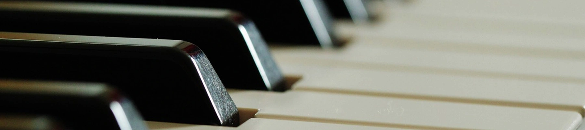

Descubre la música
En MusicArte nos comprometemos con la calidad de la enseñanza con músicos profesionales apasionados y con experiencia.

Adultos/Niños
Nuestros programas están diseñados para todas las edades y niveles.

Instrumentos
Elige nuestras clases de piano, canto o violín y desarrolla tu pasión musical.
Profesores Calificados
Nuestro equipo de docentes está formado por músicos profesionales comprometidos a ayudarte a alcanzar tus metas.


¿Dónde puedes encontrarnos?
Estamos en el barrio de Caballito.
Ciudad Autónoma de Buenos Aires, Argentina.